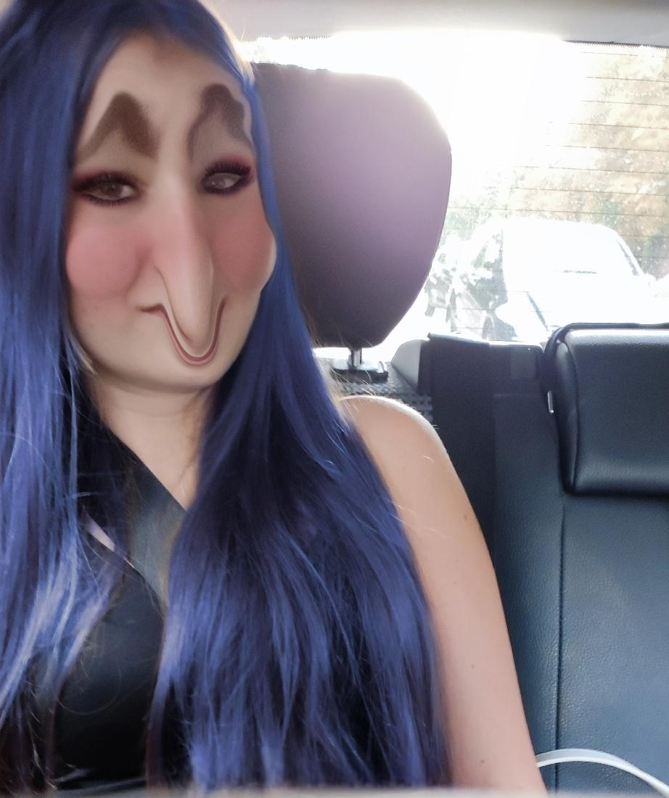

This Website is based on a girl named Stella. Stella is a friend of my sister. They are both very sus.
My sister is called Lea. Lea and Stella have a really good friendship. They are both also very very pretty.
I do have a few pictures of Stella and Lea, i am going to show a picture of Stella first:
To be honest... I am very proud of this picture i have taken.
This Picture Truely changed my life.
My vision has completely changed.
Nothing will be like it was before. you are probably asking yourself:
"Why would someone be proud of a picture like that?!"
It is because... Because no one has ever taken a picture of a Sussy baka.
what is there to say... I truely can not believe that my own sister, has turned into a sussy baka.
I mean... the friend of my sister? Yes. but my Sister? No. The fact that she is the most sussy person
on earth. fortunately, there might be a way... To
SAVE
MY
SISTER!
So, first of all: we do not know how sus my sister is. Because I can not describe it in words.
So, you have to see it yourself. Here it is:
WOW, WTF?! is probably what you are thinking right now.
trust me, i am thinking exactly the same.
Now, the most horrifying fact about my sister, is her opinion.
Yes, you heard me right. OPINION.
and you are probably thinking again "huh, how can a opinion be horrifying?!
but trust me, it can.
She does not like Breaking bad.
"WTF!? HOW CAN A PERSON NOT LIKE THIS BEAUTIFUL SHOW?!
is probably what you are thinking at this moment. And yes, i think that too.
I can not believe, what my sister has become. A sussy baka who does not like Breaking bad.
Wow... Just wow.
As i have said, in the previous Episodes... I might know something, that could save her..
No, not only her. Also Stella. i know a Spell, that might work. But you might be asking yourself
"WHAT!? a spell? have you gone crazy?!" So, now to anwser that question... Yes, a spell.
And no, i have not gone crazy.
The spell is an ongoing process. everyday, you can do one.
If you use one, it will get better. I have found the spell, in a Magic book.
Yes, a Magic book. I have bought it, from the web, of the web. The DarkWeb.
You heard me. "DarkWeb".
Now to the spell. "aUUTIUUADHAHDHHDJUIDIADKAMDKMXKjdsj
0(§"/"$")$)=787888**//----+0,,,,'ÄÖ:_:WHATHEFUCCKKK§ÜÜ**`?="GGG"!!!!CHLLOKKK;;;;::°OKKKK°$%&
CHILLL/()E@€€€OKKK(([[[[}}\IWI"
Now, you did not understand anything, did you?
There, you can hear it:
I repeat this everyday, in hope... That my sister will turn back normal.